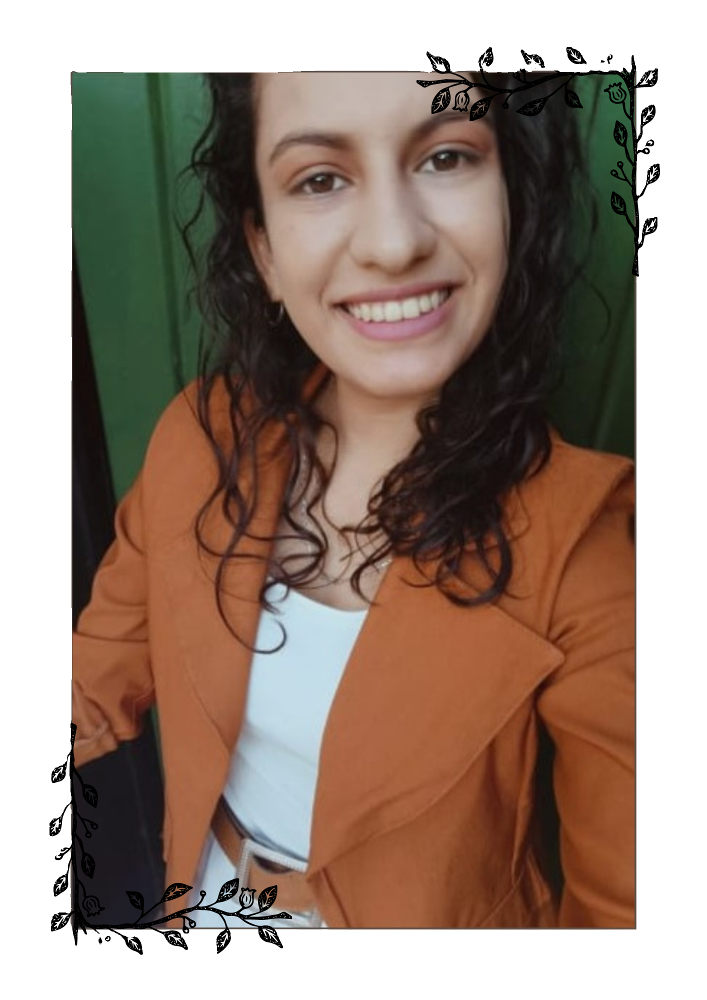
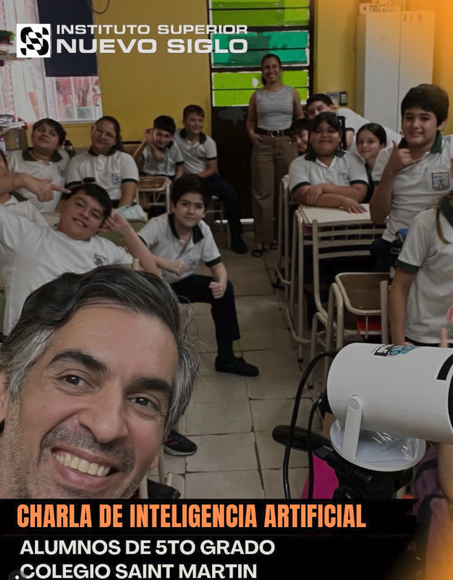
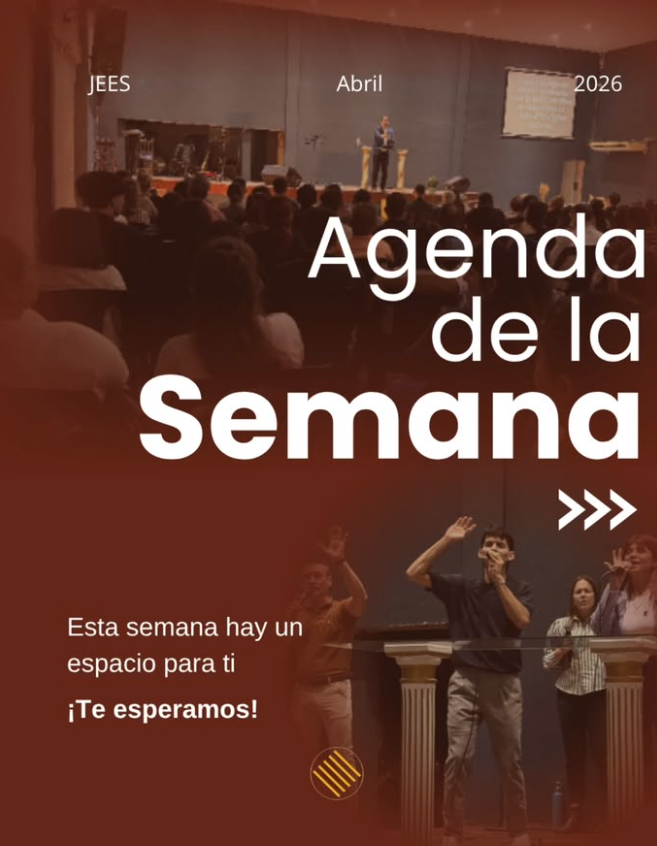
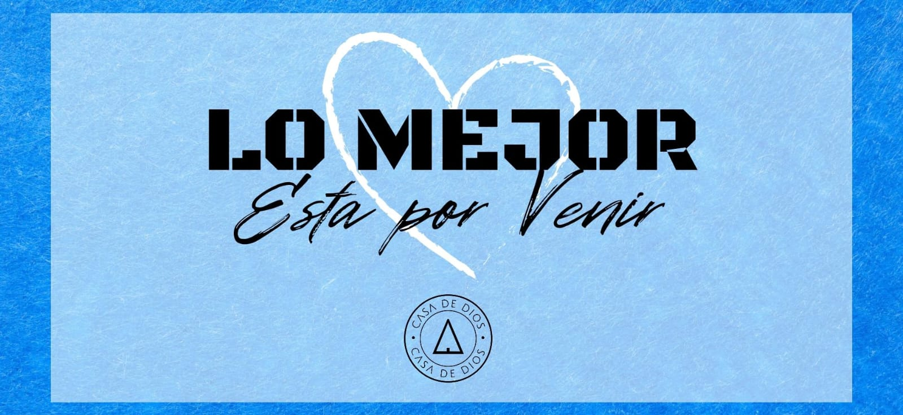
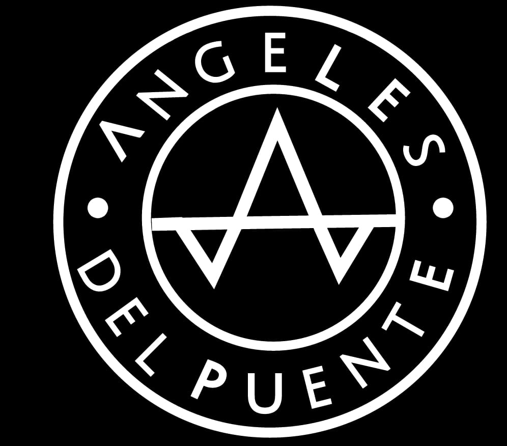
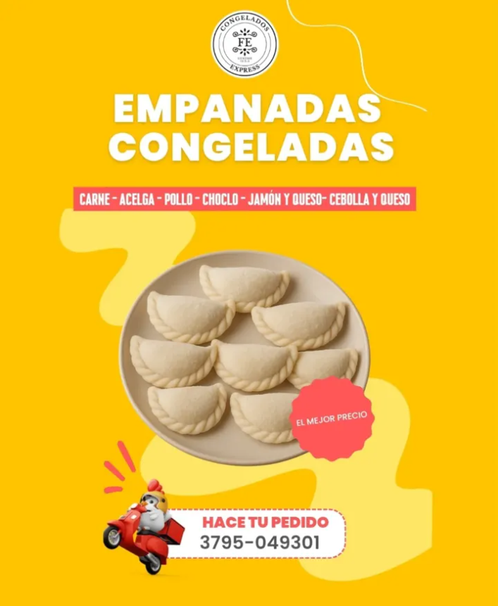
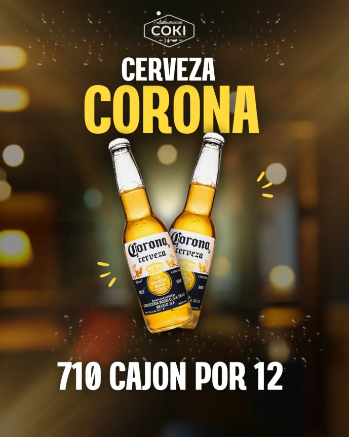
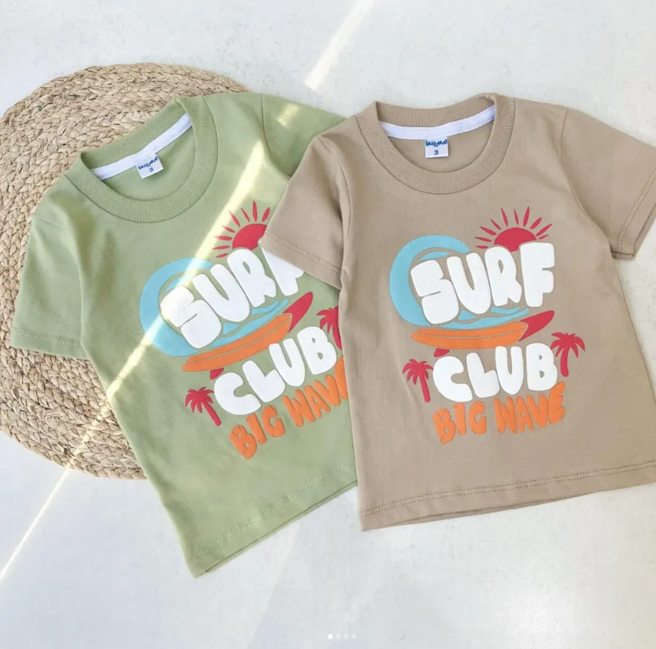
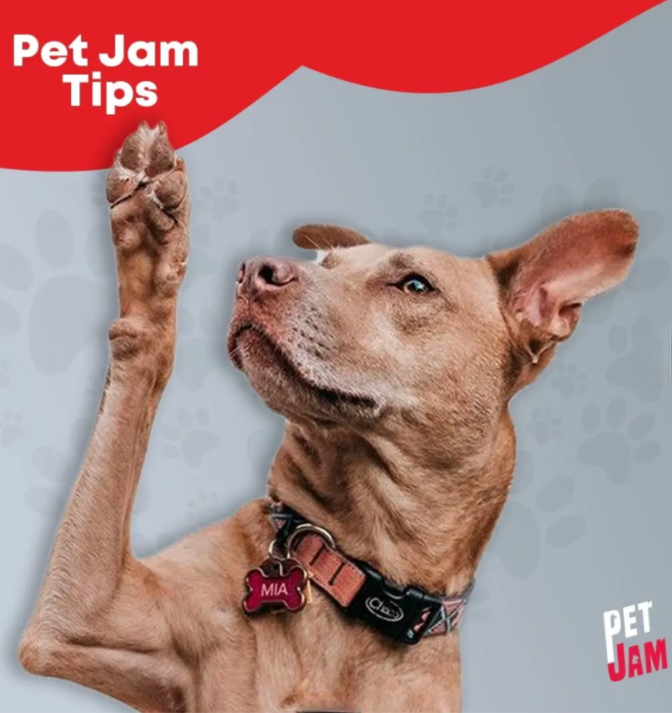
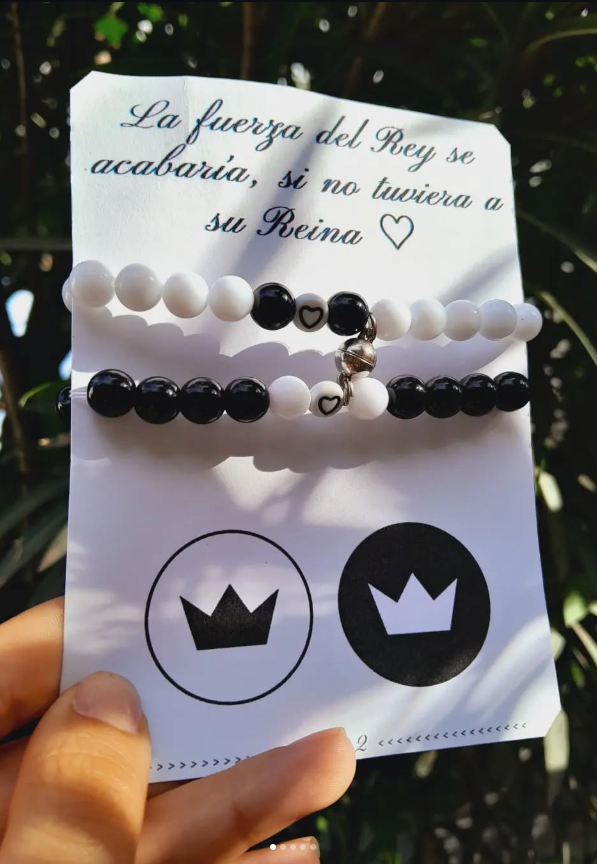

Soy Rebeca, comunicadora gráfica especializada en diseño visual y redes sociales. Mi enfoque versátil y estratégico busca crear contenidos que refuercen la identidad de marca y conecten con el público. Transformo ideas en mensajes funcionales y memorables. Si buscás una profesional creativa y comprometida para potenciar tu proyecto, estoy lista para acompañarte.

Algunos de mis trabajos más recientes

Diseño de piezas publicitarias para egresados, aplicando criterios de branding y comunicación visual para lograr una imagen sólida, atractiva y alineada al público joven.
Diseño de piezas comunicativas para la institución Nuevo Siglo, aplicando criterios de branding y comunicación visual para proyectar una imagen sólida, moderna y alineada a sus valores educativos.

Diseño de piezas comunicativas para el área de publicaciones de una congregación cristiana, aplicando criterios de branding y comunicación visual para transmitir un mensaje claro, atractivo y alineado a los valores de la comunidad.

Diseño y maquetación de la pagina donde tambien desarrollé la identidad visual, donde tambien administro la pagina de instagram. con enfoque en tipografía y composición visual.

Creación de textos y descripciones para publicaciones en redes sociales, orientadas a comunicar mensajes claros, cercanos y alineados con la identidad del proyecto.

Diseño de plantillas gráficas para contenido gastronómico, enfocadas en destacar el producto y lograr una comunicación visual atractiva y coherente en redes sociales.

Creación de piezas gráficas promocionales para mayorista de alimentos y bebidas, enfocadas en resaltar ofertas, productos y precios de forma clara, atractiva y visualmente impactante para redes sociales.

Diseño de piezas publicitarias para un local de indumentaria infantil, aplicando criterios de branding y comunicación visual para lograr una imagen cálida, atractiva y alineada al público familiar.

Desarrollo de identidad visual completa para empresa de Veterinaria, incluyendo logo, papelería corporativa y diferentes publicaciones.

Desarrollo de identidad visual y diseño de contenido para marca propia de pulseras y tobilleras, con un enfoque artesanal, estético y coherente con el concepto de la marca.